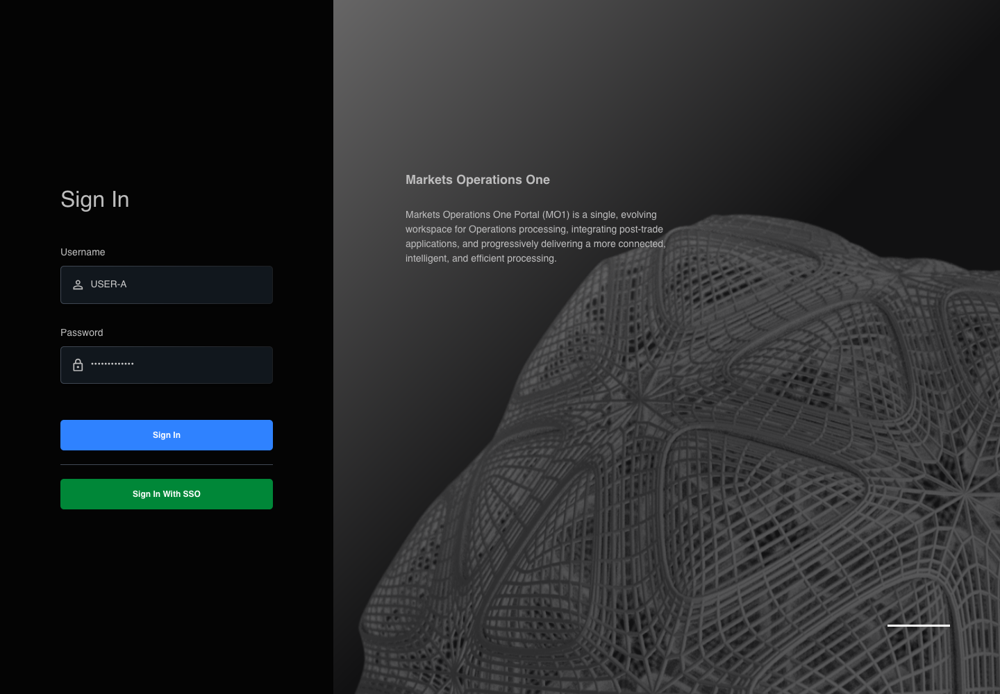
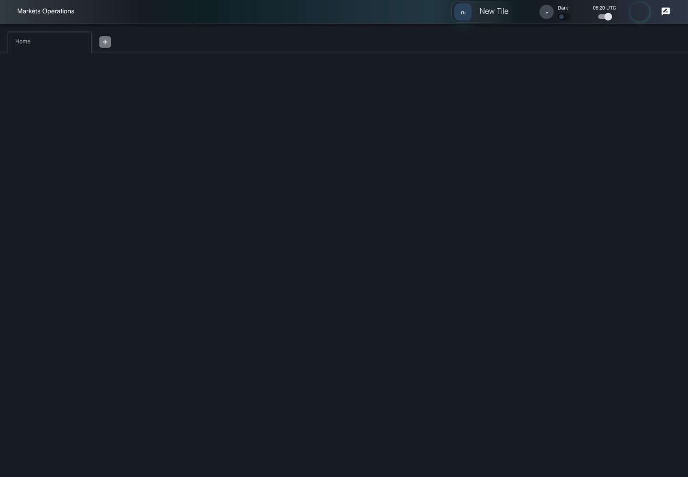
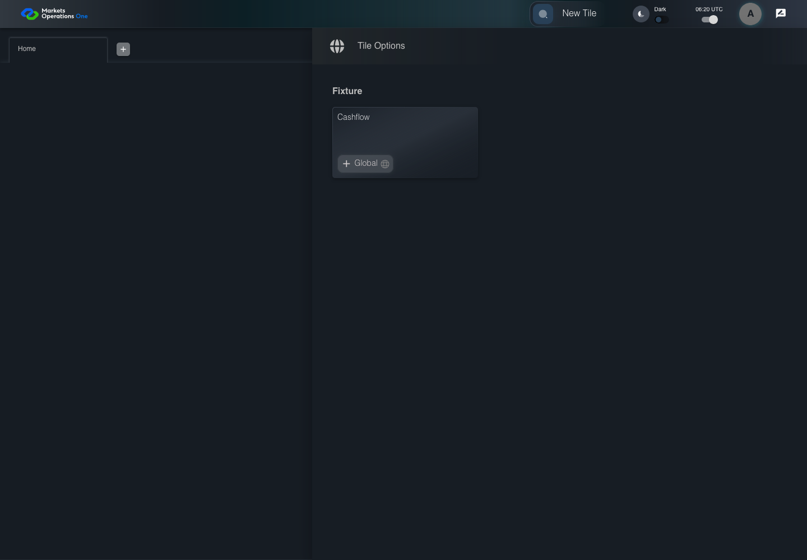
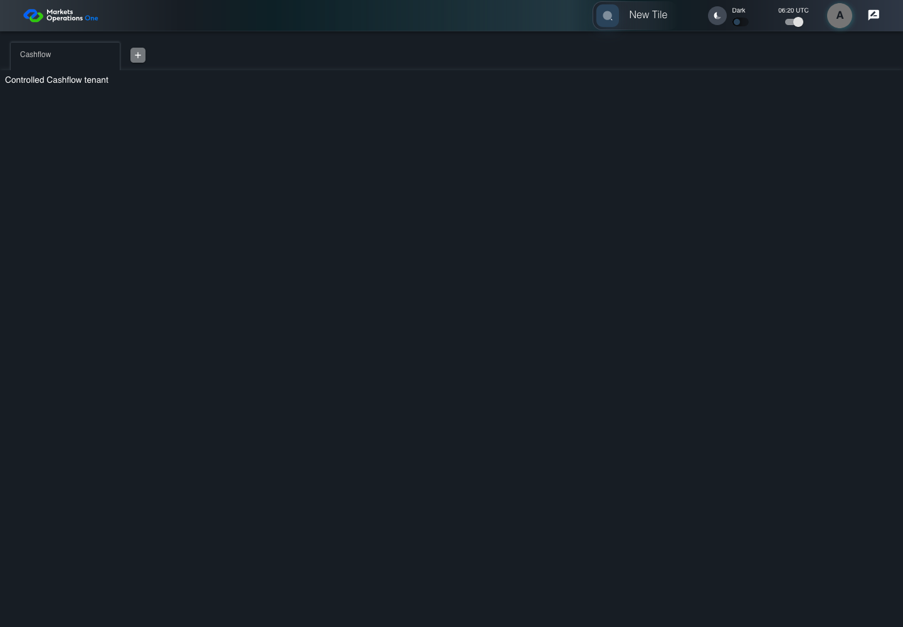

UX-061 open Cashflow and profile
FAIL · application/run-064-final/ux-061-open-cashflow-and-profile-acc11301b239-attempt-1 · ACTUAL_APPLICATION_LOCAL_SERVICES
Actual React shell in Playwright firefox automation build; controlled accepted identity and Cashflow SystemJS module. Firefox uses explicit direct-local transport after inherited proxy navigation returned HTTP503. External requests remain blocked. Real identity and business tenant results remain unverified. Firefox and WebKit use Playwright automation builds. WebKit execution does not establish Safari product compatibility.
2026-10-22T06:20:00.030Z to 2026-10-22T06:20:08.265Z
Assertions and result · Artifact manifest · Exact run inputs and source hashes
Result SHA-256:01a1bfee12f1492469954bace62248b578e336714cea1ff20e3657545ca1a77eRetained failure details
[
{
"message": "Error: \u001b[2mexpect(\u001b[22m\u001b[31mlocator\u001b[39m\u001b[2m).\u001b[22mtoHaveValue\u001b[2m(\u001b[22m\u001b[32mexpected\u001b[39m\u001b[2m)\u001b[22m failed\n\nLocator: getByTestId('MicroWebUI_base_home').getByRole('tablist', { name: 'workspaces', exact: true }).getByRole('tab', { selected: true }).getByRole('textbox')\nExpected: \u001b[32m\"Cashflow\"\u001b[39m\nReceived: \u001b[31m\"Cashflow\u001b[7m \u001b[27m\"\u001b[39m\nTimeout: 5000ms\n\nCall log:\n\u001b[2m - Expect \"toHaveValue\" getByTestId('MicroWebUI_base_home').getByRole('tablist', { name: 'workspaces', exact: true }).getByRole('tab', { selected: true }).getByRole('textbox') with timeout 5000ms\u001b[22m\n\u001b[2m - waiting for getByTestId('MicroWebUI_base_home').getByRole('tablist', { name: 'workspaces', exact: true }).getByRole('tab', { selected: true }).getByRole('textbox')\u001b[22m\n\u001b[2m 14 \u00d7 locator resolved to <input type=\"text\" id=\"edit-W1\" value=\"Cashflow \" aria-invalid=\"false\" aria-label=\"Workspace Name\" class=\"MuiInputBase-input MuiInput-input MuiInputBase-inputSizeSmall css-4zzs6-MuiInputBase-input-MuiInput-input\"/>\u001b[22m\n\u001b[2m - unexpected value \"Cashflow \"\u001b[22m\n",
"stack": "Error: \u001b[2mexpect(\u001b[22m\u001b[31mlocator\u001b[39m\u001b[2m).\u001b[22mtoHaveValue\u001b[2m(\u001b[22m\u001b[32mexpected\u001b[39m\u001b[2m)\u001b[22m failed\n\nLocator: getByTestId('MicroWebUI_base_home').getByRole('tablist', { name: 'workspaces', exact: true }).getByRole('tab', { selected: true }).getByRole('textbox')\nExpected: \u001b[32m\"Cashflow\"\u001b[39m\nReceived: \u001b[31m\"Cashflow\u001b[7m \u001b[27m\"\u001b[39m\nTimeout: 5000ms\n\nCall log:\n\u001b[2m - Expect \"toHaveValue\" getByTestId('MicroWebUI_base_home').getByRole('tablist', { name: 'workspaces', exact: true }).getByRole('tab', { selected: true }).getByRole('textbox') with timeout 5000ms\u001b[22m\n\u001b[2m - waiting for getByTestId('MicroWebUI_base_home').getByRole('tablist', { name: 'workspaces', exact: true }).getByRole('tab', { selected: true }).getByRole('textbox')\u001b[22m\n\u001b[2m 14 \u00d7 locator resolved to <input type=\"text\" id=\"edit-W1\" value=\"Cashflow \" aria-invalid=\"false\" aria-label=\"Workspace Name\" class=\"MuiInputBase-input MuiInput-input MuiInputBase-inputSizeSmall css-4zzs6-MuiInputBase-input-MuiInput-input\"/>\u001b[22m\n\u001b[2m - unexpected value \"Cashflow \"\u001b[22m\n\n at /Users/lushevol/code/github/ratan-release-impact/workbench/e2e/audit-specs/browser-compatibility.spec.ts:45:122\n at AuditCapture.step (/Users/lushevol/code/github/ratan-release-impact/workbench/e2e/support/audit-fixture.ts:94:21)\n at /Users/lushevol/code/github/ratan-release-impact/workbench/e2e/audit-specs/browser-compatibility.spec.ts:45:4",
"location": {
"file": "/Users/lushevol/code/github/ratan-release-impact/workbench/e2e/audit-specs/browser-compatibility.spec.ts",
"column": 122,
"line": 45
},
"snippet": " 43 | await audit.step(6,async()=>{await page.getByTestId(`${localPrefix}_new_tile`).click();});\n 44 | await audit.step(7,async()=>{await drawer.getByTestId(`${localPrefix}_tile`).getByText('Cashflow',{exact:true}).click();});\n> 45 | await audit.step(8,async()=>{await expect(portal.workspaceList.getByRole('tab',{selected:true}).getByRole('textbox')).toHaveValue('Cashflow');});\n | ^\n 46 | await audit.step(9,async()=>{await portal.clickAvatarButton();});\n 47 | await audit.step(10,async()=>{await portal.clickProfileMenuItem();});\n 48 | await audit.step(11,async()=>{await expect(page.getByText('User Profile',{exact:true})).toBeVisible();});"
}
]Machine observations
- browser-environment.json
a13b8ac4a1c27752f9f0195d9a4a31e217f1a638b4eae86168ecf0d439f8a2a6
Screenshot capture: CAPTURED. Named frames: 9.
Step screenshot bindings: INCOMPLETE. 8/13 canonical steps have execution screenshots.
Bindings measure structural coverage only. They do not establish screenshot content quality or relevance.
Screenshot content review: NOT_REVIEWED. Recorded context: 0/9 frames. Identical image bytes: 1 repeated frames. Recorded context does not establish human visual review.
Step 9 has no screenshot from an executed step. Step 10 has no screenshot from an executed step. Step 11 has no screenshot from an executed step. Step 12 has no screenshot from an executed step. Step 13 has no screenshot from an executed step.
Canonical step timeline
Given USER-A has a clean Firefox context, username USER-A, synthetic password FixturePass1!, and a controlled Cashflow tile
Execution: PASSED.1. step-01 Visible state after step 1: Given USER-A has a clean Firefox context, username USER-A, synthetic password FixturePass1!, and a controlled Cashflow tile
2026-10-22T06:20:01.791Z · 1440×1000
Step: /Users/lushevol/code/github/ratan-release-impact/workbench/tasks/ui-test-coverage-20261022/test-cases.md:14251
SHA-256:abfa1122212155d23f6277d0cfa5c8410a59797ab47ccba8aa3cedae9ad10397When USER-A types "USER-A" into the textbox with identifier "Enter Username" in the sign-in form on the Login page
Execution: PASSED.2. step-02 Visible state after step 2: When USER-A types "USER-A" into the textbox with identifier "Enter Username" in the sign-in form on the Login page
2026-10-22T06:20:01.877Z · 1440×1000
Step: /Users/lushevol/code/github/ratan-release-impact/workbench/tasks/ui-test-coverage-20261022/test-cases.md:14252
SHA-256:934e01256f48ef4abfbddd864ab0b6b94bb49c0791408dc8231f5cd6a65bc3beAnd USER-A types "FixturePass1!" into the text input with identifier "Enter Password" in the sign-in form on the Login page
Execution: PASSED.
3. step-03 Visible state after step 3: And USER-A types "FixturePass1!" into the text input with identifier "Enter Password" in the sign-in form on the Login page
2026-10-22T06:20:01.960Z · 1440×1000
Step: /Users/lushevol/code/github/ratan-release-impact/workbench/tasks/ui-test-coverage-20261022/test-cases.md:14253
SHA-256:36afe2c22960f0df8acb471e4f7f435f8ce6a2ef63788295246dbc763ef35c05And USER-A clicks the button labelled "Sign In" in the sign-in form on the Login page
Execution: PASSED.
4. step-04 Visible state after step 4: And USER-A clicks the button labelled "Sign In" in the sign-in form on the Login page
2026-10-22T06:20:02.131Z · 1440×1000
Step: /Users/lushevol/code/github/ratan-release-impact/workbench/tasks/ui-test-coverage-20261022/test-cases.md:14254
SHA-256:89f3a4c004836295a9d251d9fc1f96dee44f21531351c42c361031e685db4ae0Then The section labelled "New Tile" on the Home page is visible
Execution: PASSED.5. step-05 Visible state after step 5: Then The section labelled "New Tile" on the Home page is visible
2026-10-22T06:20:02.169Z · 1440×1000
Step: /Users/lushevol/code/github/ratan-release-impact/workbench/tasks/ui-test-coverage-20261022/test-cases.md:14255
SHA-256:3b59923e9354114e69f2cfa6f913d21d4ddca6183e7d500500e08882d4fb0321When USER-A clicks the section labelled "New Tile" on the Home page
Execution: PASSED.
6. step-06 Visible state after step 6: When USER-A clicks the section labelled "New Tile" on the Home page
2026-10-22T06:20:02.317Z · 1440×1000
Step: /Users/lushevol/code/github/ratan-release-impact/workbench/tasks/ui-test-coverage-20261022/test-cases.md:14256
SHA-256:1ce05690c1acd244cf14b07f0cf48685edf43cc0536946cacb98c0b5a766025eAnd USER-A clicks the section labelled "Cashflow" in the Tile Options panel on the Home page
Execution: PASSED.7. step-07 Visible state after step 7: And USER-A clicks the section labelled "Cashflow" in the Tile Options panel on the Home page
2026-10-22T06:20:02.470Z · 1440×1000
Step: /Users/lushevol/code/github/ratan-release-impact/workbench/tasks/ui-test-coverage-20261022/test-cases.md:14257
SHA-256:42b4d407c255eb6050c67e3a57b8692a51cddb26a0d2d283ab5dc3f60568acb6Then The tab labelled "Cashflow" in the tablist named "workspaces" on the Home page is selected
Execution: FAILED.
8. step-08-failure Visible state when step 8 failed. Later steps did not execute.
2026-10-22T06:20:07.577Z · 1440×1000
Step: /Users/lushevol/code/github/ratan-release-impact/workbench/tasks/ui-test-coverage-20261022/test-cases.md:14258
SHA-256:80fbbadcb17d47c244b341e9a798c1c7beeb3aabe8586055d87ac8d913a2418cWhen USER-A clicks the icon button with test ID "${MFE_APP_PREFIX_STYLE}_avatar_IconButton" on the Home page
Execution: NOT_EXECUTED.No screenshot is recorded for this step. No executed state is claimed.
And USER-A clicks the menu item with test ID "${MFE_APP_PREFIX_STYLE}_avatar_Profile" in the menu with identifier "menu-appbar-avatar" on the Home page
Execution: NOT_EXECUTED.No screenshot is recorded for this step. No executed state is claimed.
Then The dialog labelled "User Profile" on the Home page is visible
Execution: NOT_EXECUTED.No screenshot is recorded for this step. No executed state is claimed.
And The profile identity text contains "USER-A"
Execution: NOT_EXECUTED.No screenshot is recorded for this step. No executed state is claimed.
And The tab labelled "Cashflow" in the tablist named "workspaces" on the Home page remains visible
Execution: NOT_EXECUTED.No screenshot is recorded for this step. No executed state is claimed.
Additional named frames

The visible state when the test failed.
2026-10-22T06:20:07.621Z · 1440×1000Step: Test source: /Users/lushevol/code/github/ratan-release-impact/workbench/e2e/audit-specs/browser-compatibility.spec.ts:22
SHA-256:
80fbbadcb17d47c244b341e9a798c1c7beeb3aabe8586055d87ac8d913a2418cImage bytes match frame 8. An unchanged image can be valid for consecutive assertions. This match does not establish correct step content.
Screenshots establish visible state only. Assertions and traces support functional claims.